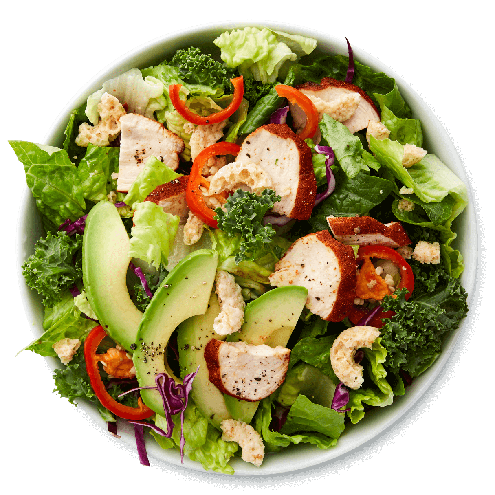
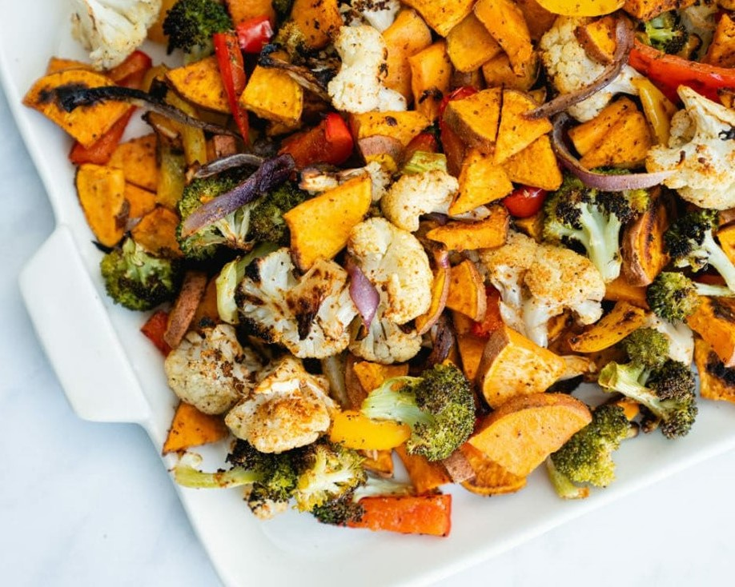
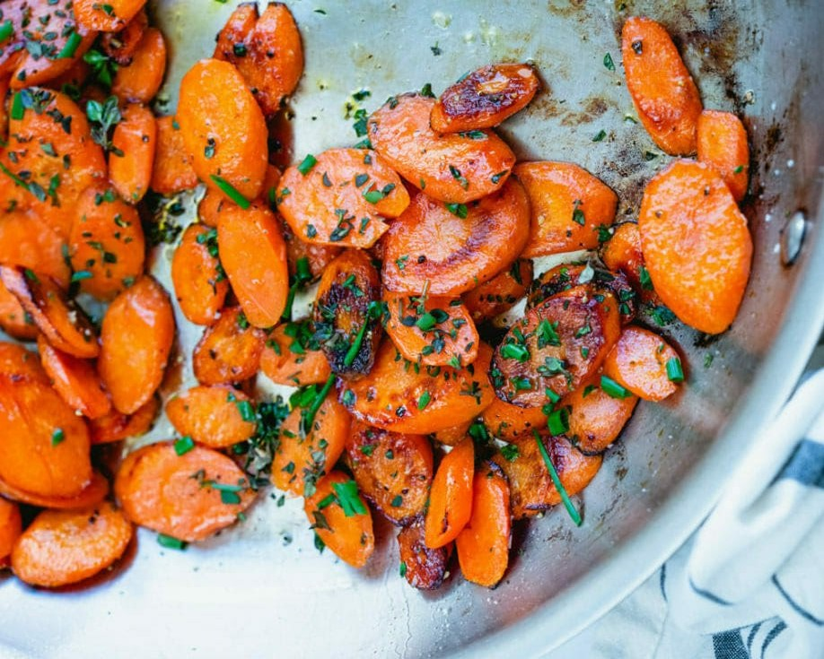
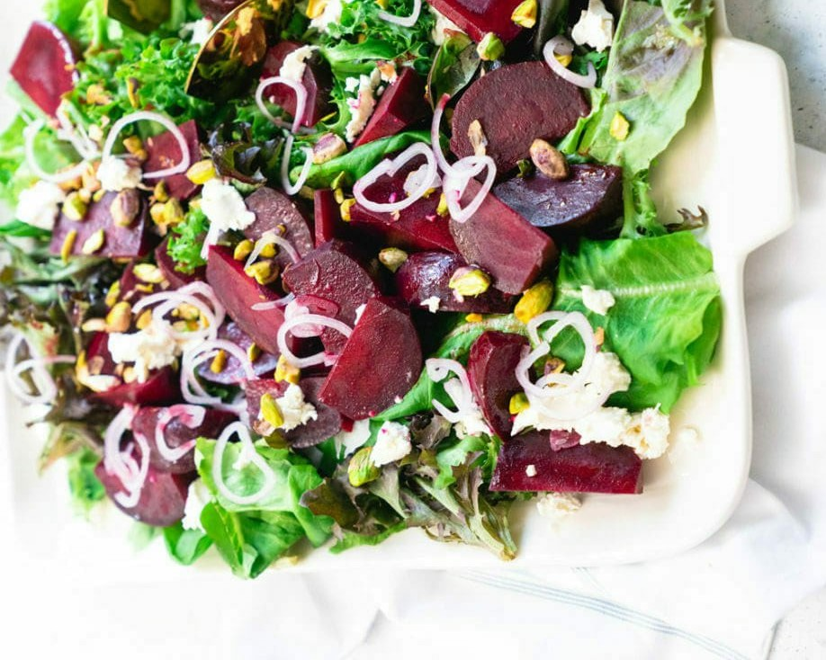

Craving some delicious Green food?
Maybe you're in the mood for a spicy green steak? Oh Yes! You are
welcome to the heaven of Green Food.

Welcome to our Green Kitchen. Here we cook and eat healthy and simple vegetarian food with natural ingredients, whole grains, good fats, fruit and vegetables. We are serving Green Food to the people since 2014 with the slogan "Go-Green with Food". We have a bunch of green recipes which will surely impress you with greeny taste and quality.
Contact UsWe are serving some of the best greeny recipes that is very popular all over the world. You are going to taste the difference that you are desiring for a long time.

This master recipe makes the most colorful sheet pans that will please even the most veggie-wary eaters.

The colorful veggies to jump onto your plate: the Ultimate Sauteed Vegetables recipe.

This beet salad works with roasted beets or even cooked packaged beets you can find at the store. !